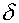
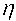

As we've seen, hebbian learning can produce interesting results, but its learning capabilities are very modest. We may get about three patterns effectively learned, but thats it! And the training data cannot be correlated, for the training rule to work. This excludes programming for instance a simple XOR, a network with two inputs and an output, that presents a "1" at the output, when one and only one of its inputs is "1". This kind of problem, needs an extra hidden layer, one that does not connect directly to the input nor the output of the net.
To train neural networks containing hidden layers, however, hebbian rules cant be applied. You'll remember hebbian rules must have access to the activation values at each end of a connection, in order to determine how to correct it. But in the case of the hidden layer, you dont have immediate access to its in- and out- activation values, since this layer constructs its internal representation, of the external training patterns. Another strategy must be used...
This strategy is the back-propagation rule, or shortly, back-prop. What this rule intents to achieve, is a minimization of an error function (the error gradient), reflecting the network's global output error (a measure of by how much the net misses the target pattern), over the whole set of training patterns. Since the goal of the algorithm is to minimize the error gradient, this technique and others derived from it, are known as gradient-descent techniques.
By an iterative process, weights are corrected in the direction that minimizes the error function, hoping the net will evolve to an error minimum. Over the iterations, the error gradient value will fluctuate up and down, going up or downhill along the error function curvature. Sometimes a shallow region is encountered, one where the error value is not so high, and that may offer a solution for the given problem, but sometimes the net must progress over extensive regions of slow gradient descent, until a minimum appears.
There is no guarantee, when this minimum is reached, that there could not be even shallower minimums, or in other words, that this found minimum (possibly a local minimum) is in fact optimal (a global minimum). Under some circumstances, theres even the possibility the net will miss any minimums at all, and will diverge (the error increases instead of decreasing), not being able to learn. One of the important requirements to assure net converging, is keeping the training coefficient small.
Lets see how the algorithm works:
First, lets recall the activation functions for neurons. As you'll recall, each neuron has the amount of its input stimulus, scaled by each connection weight, computed as
which represents the global stimulus this particular neuron will receive. This value is then compute by the activation function
resulting in the actual neuron output. In the back-propagation examples, we'll be using the sigmoid function, more adequate for continuous neurons (neurons that can take an interval of values, usually 0 to 1). The sigmoid function is given by
Now, as part of the back-prop algorithm, we'll be needing also the derivative of the activation function, which in the case of the sigmoid results quite simply in
To train the net, by correcting the weights to accommodate each pattern, the algorithm must compute the error gradient, or the error derivative of the weights, dE/dw, which represents the rate by which the error changes, with small changes in the weight connections strengths. To calculate that, it must first compute the error derivative of the output, dE/do, which represents the rate by which the error changes, with changes in the activation level of a cell.
First the training input pattern is presented to the net, and the activation of each layer is calculated, layer by layer, all the way through to the output of the net. Once the output layer's activation has been determined, the error derivative of the output is obtained for each neuron, as the simple difference between the actual and desired outputs of each cell.
To determine this value for a neuron in the hidden layer just behind the output layer, we start by identifying each connection from this hidden neuron to each of output neurons, and back propagate the previously determined values for each output neuron, scaled by the respective connection weight, to the hidden neuron, as a weighted sum of the output neurons error derivative (similar to the way we calculate activity, but in reverse direction, and using the error levels instead of the activation levels). This way we can compute dE/do for each of the hidden neurons. If there are still hidden layers behind this one, the process is restarted, this time back propagating the computed dE/do's of the hidden layer.
You can get a more detailed explanation, and even a derivation of the back-prop rule, in the reference material. For now, lets just see in pragmatic terms, what the necessary math will be, to apply this algorithm.
First we present the input pattern, and forward it through the net, computing each layer's activity from the input till the output layer.
Next, we will determine an error signal (delta), for each of the output neurons. This delta for output neurons is obtained by calculating the difference between the actual, out(k), and desired, t(k), outputs of each output neuron, multiplied by the derivative of the activation function:
After determining the error signal for each of the output neurons, we can correct each of the connections reaching a particular output neuron, by an amount given by
where (eta) is the learning coefficient, which will determine how fast the net will learn (we cant just rise this value, since for bigger values the algorithm tends to diverge), and O(j) is the activation through the particular connection. So we see that basically, each individual connection is updated proportionally to the activity at its start, and the error signal at the end.
To calculate delta for the hidden layers, we will back propagate the output layer deltas, using the connection weights to each of the hidden layer's neurons.
Considering the output layer k, for which we have computed the deltas for each cell, and a cell in hidden layer j just before the output layer:
Then the delta value for the hidden cell, is computed as the sum of the weighted deltas back from the output layer, multiplied by the activation function derivative
Finally, the weights reaching the particular hidden cell, are updated in a similar fashion to the output layer's weights, by multiplying the learning rate eta, and the input activation through the respective connection, by the error amount delta.
For any additional hidden layers, just keep back propagating delta back, using the same method.
This provides the weight correction to contemplate a given training pattern. The same process must be performed for each of the training pairs. This will complete an iteration, or as its commonly referred, an epoch. But this one iteration brought the net just slightly closer to the solution (proportionally to eta, which usually is less than one). Many iterations are required, to get the net's output really close to the desired output.
In the simple XOR problem, all we need is a binary value on the output. Since the logistic function crosses the y-axis at 0.5, we can just consider that the output is a "1", whenever the activation level for the output neuron exceeds 0.5, so we can settle for a solution within say 40% of the desired output (we settle for a relative high error), which may take fewer iterations. If we were to use the actual value of the output neuron, in the range 0 to 1, we may need to get the solution much closer to the desired value, until, say, within 10% of the target, thus requiring many more iterations to succeed.
Previous : An associative memory instrument
Up: Back to index